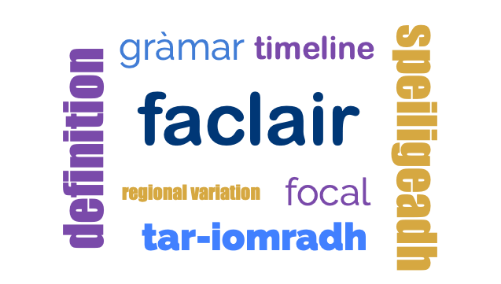

An historical dictionary of Scottish Gaelic
posted by on 09 March 2022
The Dictionary of the Scottish Gaelic Language is an inter-university initiative by the Universities of Aberdeen, Edinburgh, Glasgow, Strathclyde and Sabhal Mòr Ostaig UHI.
The aim is to produce an historical dictionary of Scottish Gaelic comparable to the multi-volume resources already available for Scots and English, namely the Dictionary of the Older Scottish Tongue, the Scottish National Dictionary and the Oxford English Dictionary. These resources are now available on-line. The Dictionary of the Scottish Gaelic Language will be published initially in electronic format.
The dictionary will document fully the history of the Gaelic language and culture from the earliest manuscript material onwards, placing Gaelic in context with Irish and Scots. By allowing identification of the Gaelic/Scots interface throughout Scottish history, it will increase our understanding of our linguistic national heritage and will reveal the fundamental role of Gaelic in the linguistic identity of Scotland. Of equal importance, it will show the relationship between Scottish Gaelic and Irish.
The dictionary will respond to the needs of the Gaelic language in the 21st century by providing an authoritative foundation for smaller bilingual and monolingual dictionaries and language learning materials. Thus, the dictionary will be geared to meet the needs of students, teachers and parents in the growing sector of Gaelic-medium education.
The Dictionary will be the major language project for Scottish Gaelic, providing a foundation and a stimulus for future language initiatives.